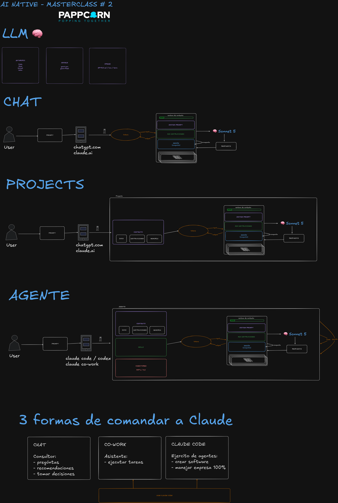

La puerta de entrada al universo PappCorn: el kit completo de la masterclass Tu Ventaja con IA — prompts, framework y un skill, listos para copiar — y el catálogo abierto de conectores para darle poderes reales a tu asistente. Es tuyo — compártelo con quien quieras.
Cuando esos cuatro pasos se te queden cortos, sigue con el catálogo: conectores abiertos para que tu asistente mande correos, edite hojas de cálculo y escriba por WhatsApp — desde tus propias cuentas.
Pégalo en un chat nuevo. Claude te hace 3 preguntas y te devuelve el texto para pegar en Settings → Instructions for Claude.
Ayúdame a escribir mis «Instrucciones para Claude»: un texto corto que vas a
recordar en todos mis chats para responderme mejor desde el primer mensaje.
Primero hazme unas preguntas, de una en una y en lenguaje sencillo, para
conocerme: quién soy y a qué me dedico, en qué quiero que me ayudes más
seguido, y cómo prefiero que me hables (idioma, tono y qué tan largo).
Cuando ya me conozcas, escríbeme el texto final en primera persona ("Soy…",
"Prefiero…"), claro y corto (máximo 1000 caracteres), y muéstramelo en un
bloque de código para copiarlo fácil.
Empieza con la primera pregunta.
En claude.ai → New Project → nómbralo ("Mi asistente de ___"). Pégale este prompt para que escriba sus instrucciones, y ponlas en Instructions del Project.
Quiero crear un asistente especializado. Ayúdame a escribir sus «instrucciones»:
el texto que define su rol y cómo trabaja, que voy a pegar en un Project de Claude.
Primero hazme 3–4 preguntas para entender: qué tarea hace este asistente por mí,
qué debe SIEMPRE hacer y qué NUNCA, y con qué tono/formato quiero sus entregas.
Luego escríbeme las instrucciones finales en segunda persona ("Eres mi asistente
de ___. Tu trabajo es…"), claras y cortas, en un bloque de código para copiar.
Empieza con la primera pregunta.
El 80% de la mala IA es prompting flojo. Estas 4 letras arreglan casi todo:
ROL: Eres mi [___]. CONTEXTO: Soy [quién soy]. Mi situación: [X]. Mi meta: [Y]. TAREA: [lo que necesito ahora, concreto]. FORMATO: [idioma, tono, largo y estructura de la respuesta].
¿Lo quieres en una sola página para imprimir o compartir? Descarga el one-pager R-C-T-F (PDF).
Un skill es un procedimiento escrito una vez que tu asistente repite igual de bien cada vez. Este convierte la nota de una reunión (en tu Drive) en un resumen + lista de tareas. Agrégalo en Customize → Skills → Add → Write skill instructions (necesita Google Drive conectado).
Versión ligera para uso personal: solo necesita Google Drive conectado (y opcionalmente Google Calendar). El resultado se entrega listo para copiar. Cuando el usuario pida procesar una reunión, sigue estos pasos en orden: 1. ENCUENTRA LA NOTA - Busca en Google Drive la nota o transcripción de reunión más reciente (por ejemplo un "Notes by Gemini"), o la que el usuario nombre. - Si hay más de una candidata, muestra las opciones y pregunta cuál. 2. EXTRAE LO IMPORTANTE - Resumen en máximo 5 líneas. - Decisiones tomadas (solo las explícitas). - Action items: qué + quién + para cuándo, según lo que se dijo. 3. ENTREGA EL RESULTADO (listo para copiar) Reunión: <nombre> · <fecha> Resumen: <5 líneas máx.> Decisiones: <lista, o "ninguna explícita"> Tareas: una tabla con columnas Qué | Quién | Para cuándo. Marca lo que quedó sin responsable o sin fecha para que lo completes. REGLAS DURAS - Nunca inventes responsables, fechas ni decisiones que no estén en la nota. - Si la nota está incompleta, dilo y pide la información — no rellenes huecos.
El diagrama completo que construimos juntos: cómo funciona la IA por dentro, y las tres formas de comandarla.

Universe es el catálogo abierto de PappCorn: conectores que le dan manos a tu IA — tu correo, tus hojas de cálculo, tu WhatsApp — sin entregarle tus credenciales a nadie. Tú creas tu propia app, autorizas tu propia cuenta, y la credencial nunca sale de tu máquina. Todo el código es abierto: puedes leer cada línea antes de confiar.
Los conectores se instalan como plugins en Claude Code (y corren en cualquier cliente MCP). Instalarlos toma dos comandos:
/plugin marketplace add pappcorn/universe /plugin install gmail-mcp@pappcorn-plugins
Cada conector necesita una configuración de cuenta única (~15 minutos, guiada paso a paso, en inglés): Google (Gmail y Sheets) · WhatsApp. El catálogo completo vive en github.com/pappcorn/universe.